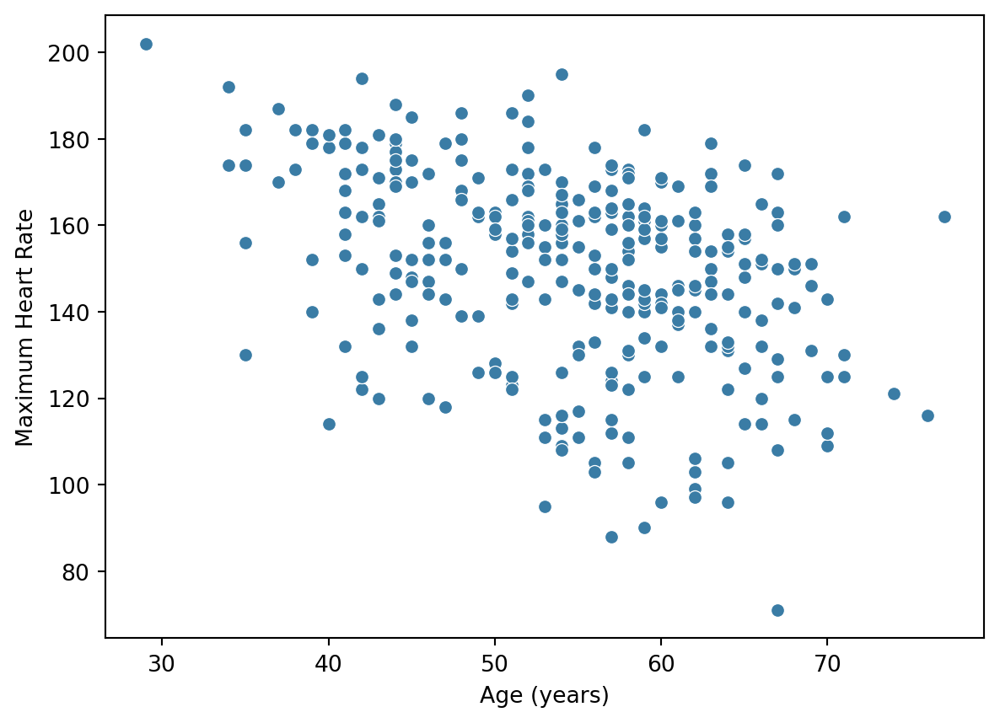
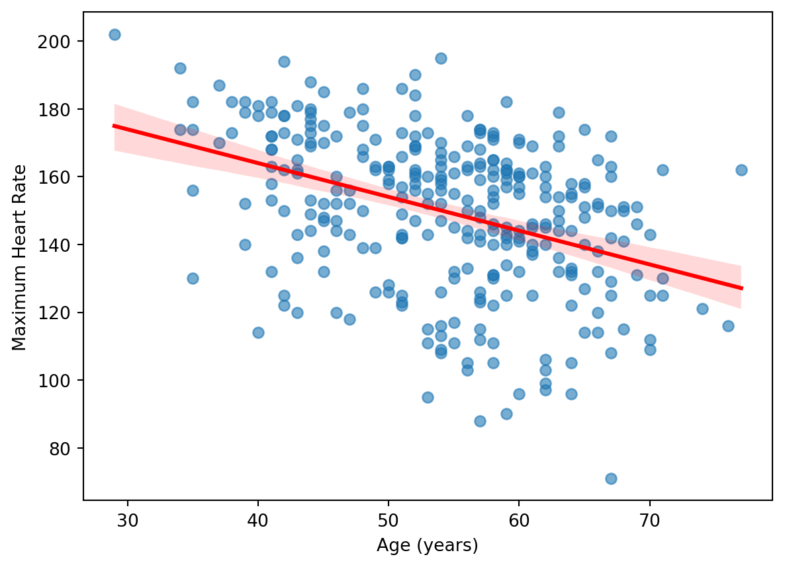
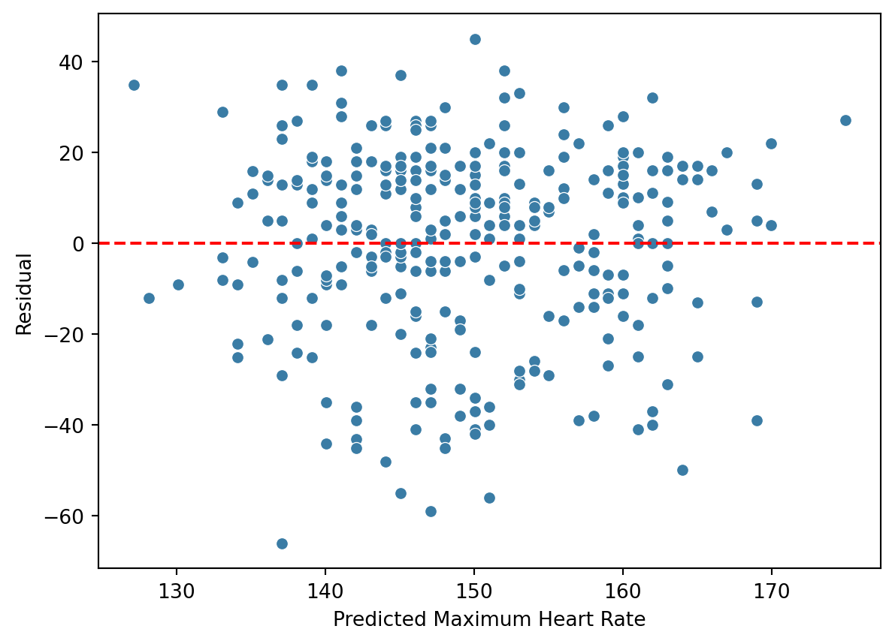

Correlation and Regression
From relationships to prediction
Learning Objectives
By the end of this chapter, you should be able to:
- explain why relationships between variables matter in biomedical data;
- interpret scatter plots;
- understand the concepts of covariance and correlation;
- distinguish between Pearson and Spearman correlation;
- interpret correlation coefficients and their statistical significance;
- explain why correlation does not imply causation;
- build and interpret simple linear regression models;
- understand the basic ideas behind multiple and logistic regression;
- evaluate predictive models using metrics such as R², accuracy, and AUC.
Why Relationships Matter
In the previous chapter, we focused on comparing groups.
For example, we asked whether patients with and without heart disease differed in age, cholesterol, or other clinical measurements.
However, many biomedical questions are not simply about comparing groups.
They are about understanding how variables change together.
For example:
- Does maximum heart rate decrease with age?
- Is cholesterol related to blood pressure?
- Can clinical measurements help us predict disease risk?
To answer these questions, we need methods for studying relationships between variables.
ImportantKey Idea
Correlation and regression help us move from describing individual variables to understanding relationships between variables.
Visualising Relationships
Before calculating any statistic, we should first look at the data.
A scatter plot is one of the simplest ways to visualise the relationship between two numerical variables.
Each point represents one patient.
The plot suggests that maximum heart rate tends to decrease as age increases.
However, the relationship is not perfect. Patients of the same age can have different maximum heart rates.
This is why we need statistical tools to quantify the strength of the relationship.
Correlation
Correlation quantifies the strength and direction of a relationship between two variables.
To understand correlation, it is useful to begin with covariance.
The covariance between two variables is defined as:
\[ \mathrm{Cov}(X,Y) = \frac{1}{n-1} \sum_{i=1}^{n} (x_i-\bar{x})(y_i-\bar{y}) \]
where:
- \(x_i\) and \(y_i\) are individual observations;
- \(\bar{x}\) and \(\bar{y}\) are sample means;
- \(n\) is the number of observations.
Positive covariance indicates that the variables tend to increase together, whereas negative covariance indicates that one variable tends to decrease as the other increases.
However, covariance depends on the units of measurement and is therefore difficult to interpret directly.
To overcome this limitation, we standardise covariance to obtain the correlation coefficient:
\[ r = \frac{ \sum_{i=1}^{n}(x_i-\bar{x})(y_i-\bar{y}) } { \sqrt{ \sum_{i=1}^{n}(x_i-\bar{x})^2 } \sqrt{ \sum_{i=1}^{n}(y_i-\bar{y})^2 } } \]
This standardisation ensures that:
\[ -1 \le r \le 1. \]
| Correlation | Interpretation |
|---|---|
| +1 | Perfect positive relationship |
| 0 | No linear relationship |
| -1 | Perfect negative relationship |
Values closer to ±1 indicate stronger relationships.
Values closer to 0 indicate weaker relationships.
NoteEngineering Interpretation
The correlation coefficient can be viewed as a normalised measure of how strongly two variables vary together.
- \(r = 1\) indicates perfect positive alignment.
- \(r = -1\) indicates perfect negative alignment.
- \(r = 0\) indicates no linear relationship.
In practice, biomedical data rarely exhibit correlations close to ±1 because biological systems are influenced by many interacting factors.
Interactive Correlation Simulator
Move the slider below and observe how the scatter plot changes.
As the correlation approaches +1 or -1, the points become more tightly aligned.
When the correlation approaches 0, the relationship becomes weaker.
Correlation: 0.70
TipWhat to Notice
- Positive correlations slope upwards.
- Negative correlations slope downwards.
- Stronger correlations produce tighter clusters of points.
- Correlation close to zero produces a diffuse cloud.
Pearson Correlation
Pearson correlation measures the strength of a linear relationship between two numerical variables.
Mathematically, Pearson correlation is precisely the correlation coefficient \(r\) defined above.
It measures how closely the data follow a straight-line relationship.
For the Cleveland dataset, we can quantify the relationship between age and maximum heart rate.
from scipy.stats import pearsonr
r, p = pearsonr(
df["age"],
df["thalach"]
)
print(f"Pearson correlation = {r:.3f}")
print(f"p-value = {p:.5f}")Pearson correlation = -0.394
p-value = 0.00000Testing Statistical Significance
To determine whether the observed correlation could plausibly have arisen by chance, we test:
\[ H_0:r=0 \]
against:
\[ H_A:r\neq0. \]
The test statistic is:
\[ t = r \sqrt{ \frac{n-2}{1-r^2} } \]
Under the null hypothesis, this follows a Student’s \(t\) distribution with:
\[ n-2 \]
degrees of freedom.
The p-value quantifies the evidence against the hypothesis of no correlation.
Interpretation
- Positive values indicate that both variables tend to increase together.
- Negative values indicate that one variable tends to decrease as the other increases.
- Values closer to ±1 indicate stronger relationships.
Spearman Correlation
Pearson correlation works well when relationships are approximately linear.
However, many biomedical relationships are not perfectly linear.
Spearman correlation is based on the ranks of the observations rather than their exact values.
If \(R(X)\) and \(R(Y)\) denote the ranks of the variables, then the Spearman coefficient is simply the Pearson correlation applied to the ranks:
\[ \rho = \mathrm{corr} \left( R(X), R(Y) \right) \]
This makes Spearman correlation less sensitive to outliers and departures from linearity.
from scipy.stats import spearmanr
rho, p = spearmanr(
df["age"],
df["thalach"]
)
print(f"Spearman correlation = {rho:.3f}")
print(f"p-value = {p:.5f}")Spearman correlation = -0.392
p-value = 0.00000Pearson vs Spearman
| Pearson Correlation | Spearman Correlation |
|---|---|
| Uses actual values | Uses ranks |
| Measures linear relationships | Measures monotonic relationships |
| Sensitive to outliers | More robust to outliers |
| Most commonly reported | Useful when assumptions are violated |
ImportantCorrelation is Symmetric
Correlation does not distinguish between inputs and outputs.
The correlation between age and maximum heart rate is identical to the correlation between maximum heart rate and age.
This symmetry is one of the key differences between correlation and regression, which we will study next.
Correlation Does Not Imply Causation
A strong correlation does not prove that one variable causes another.
For example:
- Age and heart disease are correlated.
- However, age itself does not directly cause heart disease.
Many biological, behavioural, environmental, and genetic factors contribute to disease development.
Correlation identifies relationships.
Establishing causation requires additional evidence, careful study design, and scientific reasoning.
WarningImportant
Correlation does not imply causation.
Two variables may be strongly correlated without one causing the other.
Always consider alternative explanations, confounding factors, and study design before drawing causal conclusions.
Try It Yourself
TipExercises
Using the Cleveland dataset:
- Create a scatter plot of age versus cholesterol.
- Compute the Pearson correlation between age and cholesterol.
- Compute the Spearman correlation between age and cholesterol.
- Which correlation coefficient is larger?
- Is there evidence that age causes higher cholesterol based on correlation alone?
Simple Linear Regression
Correlation tells us whether two variables are related.
However, correlation alone cannot be used to make predictions.
Regression goes one step further by modelling the relationship between variables and allowing us to predict one variable from another.
For example:
- Can we predict maximum heart rate from age?
- Can we predict cholesterol from blood pressure?
- Can we predict disease risk from clinical measurements?
These questions form the basis of predictive modelling.
From Correlation to Prediction
Suppose we wish to predict a patient’s maximum heart rate using their age.
Rather than simply describing this relationship, we would like to quantify it and use it for prediction.
The Regression Model
The simplest regression model is called simple linear regression.
It assumes that the relationship between two variables can be approximated by a straight line:
\[ y = \beta_0 + \beta_1 x + \varepsilon \]
where:
- \(y\) is the outcome variable;
- \(x\) is the predictor variable;
- \(\beta_0\) is the intercept;
- \(\beta_1\) is the slope;
- \(\varepsilon\) represents random error.
The goal of regression is to estimate the coefficients \(\beta_0\) and \(\beta_1\) from the data.
How is the Line Chosen?
Many different lines could be drawn through the data.
Linear regression chooses the line that minimises the sum of squared residuals:
\[ \sum_{i=1}^{n} \left( y_i-\beta_0 - \beta_1 x_i \right)^2 \]
This is known as the least-squares criterion.
Squaring the residuals penalises large errors more heavily than small errors and ensures that positive and negative residuals do not cancel each other out.
Interactive Regression Simulator
The slope and intercept determine the position and orientation of the regression line.
In this simulator, the data points are fixed. Only the regression line changes as you move the sliders. This helps isolate the effect of the two parameters in the model:
\[ y = \beta_0 + \beta_1 x \]
Intercept (β₀): 140
Slope (β₁): -1.0
TipWhat to Notice
- The data points stay fixed.
- The intercept shifts the line up and down.
- The slope controls how steeply the line rises or falls.
- A positive slope produces an upward line.
- A negative slope produces a downward line.
- The best-fitting line is the one that passes closest to the data points overall.
Fitting a Regression Model
Using the Cleveland dataset, we can model maximum heart rate as a function of age.
from sklearn.linear_model import LinearRegression
X = df[["age"]]
y = df["thalach"]
model = LinearRegression()
model.fit(X, y)
print(f"Intercept = {model.intercept_:.2f}")
print(f"Slope = {model.coef_[0]:.2f}")Intercept = 203.86
Slope = -1.00For the Cleveland dataset, the fitted model is approximately
\[ \widehat{\text{Max Heart Rate}} = 203.86 - 1.00 \times \text{Age} \]
This suggests that maximum heart rate decreases by approximately 1 beat per minute for each additional year of age.
Visualising the Regression Line

The regression line represents the average relationship between age and maximum heart rate.
Interpreting the Slope
The slope \(\beta_1\) is one of the most important quantities in regression.
It represents the expected change in the outcome variable associated with a one-unit increase in the predictor.
For example:
- A slope of -0.8 would indicate that maximum heart rate decreases by approximately 0.8 beats per minute for every additional year of age.
The sign of the slope determines the direction of the relationship:
| Slope | Interpretation |
|---|---|
| Positive | Outcome increases as predictor increases |
| Negative | Outcome decreases as predictor increases |
| Zero | No linear relationship |
Prediction
Once the model has been fitted, we can use it to make predictions.
For example, what maximum heart rate would we predict for a 60-year-old patient?
predicted_hr = model.predict([[60]])
print(f"Predicted maximum heart rate = {predicted_hr[0]:.1f}")Predicted maximum heart rate = 144.1The predicted value lies on the regression line.
Different patients may have different observed values, but the regression model provides the best average prediction based on the available data.
Residuals
No model predicts perfectly.
The difference between an observed value and its predicted value is called the residual:
\[ e_i = y_i - \hat{y}_i \]
where:
- \(y_i\) is the observed value;
- \(\hat{y}_i\) is the predicted value.
Residuals tell us how well the model fits the data.
Small residuals indicate good predictions.
Large residuals indicate poor predictions.
Visualising Residuals

Ideally, residuals should be randomly scattered around zero.
Systematic patterns may indicate that the model is missing important information.
Measuring Model Performance: R²
The coefficient of determination, denoted \(R^2\), measures how much of the variability in the outcome is explained by the model.
\[ R^2 = 1 - \frac{ \sum (y_i-\hat{y}_i)^2 }{ \sum (y_i-\bar{y})^2 } \]
Values range from:
\[ 0 \le R^2 \le 1 \]
where:
- \(R^2 = 0\) indicates no explanatory power;
- \(R^2 = 1\) indicates perfect prediction.
r2 = model.score(X, y)
print(f"R² = {r2:.3f}")R² = 0.155An R² of 0.155 means that approximately 15.5% of the variability in maximum heart rate can be explained by age alone.
The remaining variability is due to other factors and random variation.
NoteInterpretation
A high \(R^2\) suggests that the model explains a large proportion of the variability in the data.
However, a high \(R^2\) does not imply causation, nor does it guarantee good predictions for new patients.
Try It Yourself
TipExercises
Using the Cleveland dataset:
- Fit a linear regression model predicting cholesterol from age.
- Interpret the estimated slope.
- Predict cholesterol for a 60-year-old patient.
- Calculate the model’s \(R^2\).
- Examine the residual plot and assess the quality of the fit.
Beyond Simple Regression
So far, we have used a single predictor to explain or predict an outcome.
In practice, biomedical outcomes are influenced by many factors simultaneously.
For example, maximum heart rate may depend on:
- age;
- sex;
- blood pressure;
- cholesterol;
- physical fitness;
- underlying disease.
To model such systems, we need more flexible regression models.
Multiple Linear Regression
Multiple linear regression extends simple linear regression by incorporating several predictors simultaneously.
Instead of
\[ y = \beta_0 + \beta_1 x + \varepsilon, \]
we write
\[ y = \beta_0 + \beta_1 x_1 + \beta_2 x_2 + \cdots + \beta_p x_p + \varepsilon. \]
Here:
- \(x_1, x_2, \ldots, x_p\) are predictor variables;
- \(\beta_1, \beta_2, \ldots, \beta_p\) quantify their contributions;
- \(p\) is the number of predictors.
Cleveland Example
Suppose we wish to predict maximum heart rate using:
- age;
- cholesterol;
- resting blood pressure.
from sklearn.linear_model import LinearRegression
X = df[["age", "chol", "trestbps"]]
y = df["thalach"]
multi_model = LinearRegression()
multi_model.fit(X, y)
coefficients = pd.DataFrame({
"Predictor": X.columns,
"Coefficient": multi_model.coef_
})
coefficients| Predictor | Coefficient | |
|---|---|---|
| 0 | age | -1.085820 |
| 1 | chol | 0.034249 |
| 2 | trestbps | 0.086843 |
The model combines information from multiple variables to improve prediction.
NoteInterpretation
Each coefficient represents the expected change in the outcome associated with a one-unit increase in that predictor, while holding all other predictors constant.
Comparing Multiple Regression Models
In practice, we often have many potential predictor variables.
A natural question is:
Which combination of variables gives the best model?
Simply adding more variables will usually improve the fit to the training data. However, more complex models may be harder to interpret and may not generalise well to new data.
To balance model fit and model complexity, statisticians often use information criteria.
Akaike Information Criterion (AIC)
\[ AIC = 2k - 2\log(L) \]
Bayesian Information Criterion (BIC)
\[ BIC = k\log(n) - 2\log(L) \]
where:
- \(k\) is the number of model parameters;
- \(L\) is the likelihood of the model;
- \(n\) is the number of observations.
For both AIC and BIC:
- lower values indicate better models;
- the criteria penalise unnecessary complexity;
- BIC generally penalises complexity more strongly than AIC.
Comparing Several Models
import statsmodels.api as sm
candidate_models = {
"Age": ["age"],
"Age + Cholesterol": ["age", "chol"],
"Age + Cholesterol + Blood Pressure": [
"age",
"chol",
"trestbps"
]
}
results = []
for name, predictors in candidate_models.items():
X_model = sm.add_constant(
df[predictors]
)
y_model = df["thalach"]
fitted_model = sm.OLS(
y_model,
X_model
).fit()
results.append({
"Model": name,
"AIC": round(fitted_model.aic, 2),
"BIC": round(fitted_model.bic, 2),
"R²": round(fitted_model.rsquared, 3)
})
comparison_df = pd.DataFrame(results)
comparison_df| Model | AIC | BIC | R² | |
|---|---|---|---|---|
| 0 | Age | 2708.62 | 2716.05 | 0.155 |
| 1 | Age + Cholesterol | 2708.28 | 2719.42 | 0.162 |
| 2 | Age + Cholesterol + Blood Pressure | 2708.80 | 2723.66 | 0.166 |
Interpreting the Results
The table allows us to compare competing models.
When comparing models:
- Higher \(R^2\) indicates that more variability in the outcome is explained.
- Lower AIC indicates a better trade-off between fit and complexity.
- Lower BIC indicates a better trade-off between fit and complexity, with a stronger penalty for additional variables.
ImportantKey Idea
A good model is not necessarily the most complex model.
AIC and BIC help us identify models that explain the data well while avoiding unnecessary complexity.
Which Variables Appear Most Important?
One simple way to assess importance is to examine the fitted coefficients.
coefficients| Predictor | Coefficient | |
|---|---|---|
| 0 | age | -1.085820 |
| 1 | chol | 0.034249 |
| 2 | trestbps | 0.086843 |
For this example:
- predictors with larger absolute coefficients generally have a stronger influence on the predicted outcome;
- coefficients close to zero may contribute relatively little information;
- interpretation should always be made in the context of the variable’s scale and units.
In more advanced machine learning workflows, feature importance can also be assessed using methods such as permutation importance, regularisation, decision trees, and SHAP values.
For now, coefficient size, AIC, BIC, and \(R^2\) provide useful tools for understanding and comparing regression models.
Logistic Regression
Linear regression predicts continuous outcomes such as:
- age;
- cholesterol;
- blood pressure;
- heart rate.
However, many biomedical questions involve categorical outcomes.
For example:
- Does the patient have heart disease?
- Will the patient be admitted to hospital?
- Is a tumour benign or malignant?
These outcomes require a different type of model.
Binary Classification
Suppose we wish to predict:
\[ \text{Heart Disease} = \begin{cases} 1 & \text{Yes} \\ 0 & \text{No} \end{cases} \]
A straight line is no longer appropriate because probabilities must lie between 0 and 1.
Logistic regression solves this problem by modelling probabilities rather than raw values.
The Logistic Function
Logistic regression uses the sigmoid function:
\[ P(Y=1) = \frac{1} {1+e^{-z}} \]
where
\[ z = \beta_0 + \beta_1 x_1 + \cdots + \beta_p x_p. \]
The sigmoid function transforms any real number into a probability between 0 and 1.
Interactive Sigmoid Simulator
The sigmoid function converts any real-valued input into a probability between 0 and 1.
Move the slider below to see how the value of \(z\) changes the predicted probability.
Linear predictor (z): 0.0
Predicted probability: 0.50
TipWhat to Notice
- When \(z = 0\), the predicted probability is 0.5.
- Large positive values of \(z\) produce probabilities close to 1.
- Large negative values of \(z\) produce probabilities close to 0.
- The sigmoid function ensures that logistic regression outputs valid probabilities.
Cleveland Example
We can predict the probability of heart disease using:
- age;
- cholesterol;
- resting blood pressure;
- maximum heart rate.
from sklearn.linear_model import LogisticRegression
X = df[["age", "chol", "trestbps", "thalach"]]
y = df["heart_disease"]
log_model = LogisticRegression(max_iter=1000)
log_model.fit(X, y)
predicted_probabilities = (
log_model
.predict_proba(X)[:,1]
)
predicted_probabilities[:10]array([0.49410634, 0.09326307, 0.37112164, 0.86994449, 0.79823391,
0.83561137, 0.59562023, 0.64628858, 0.50708295, 0.60311031])The output is a probability.
For example:
0.82means an estimated 82% probability of heart disease.
Evaluating Logistic Regression
For logistic regression, we are interested in how well the model distinguishes between patients with and without disease.
Two commonly used metrics are:
- Accuracy: proportion of correct predictions.
- Area Under the ROC Curve (AUC): measures how well the model separates the two classes across all decision thresholds.
from sklearn.metrics import (
accuracy_score,
roc_auc_score
)
predicted_labels = log_model.predict(X)
accuracy = accuracy_score(
y,
predicted_labels
)
auc = roc_auc_score(
y,
predicted_probabilities
)
print(f"Accuracy = {accuracy:.3f}")
print(f"AUC = {auc:.3f}")Accuracy = 0.706
AUC = 0.756
NoteInterpretation
- Accuracy measures the proportion of patients correctly classified.
- AUC ranges from 0.5 (random guessing) to 1.0 (perfect discrimination).
- In biomedical applications, AUC is often preferred because it is less sensitive to the choice of classification threshold.
From Regression to Predictive Modelling
Linear and logistic regression are among the most important predictive models in healthcare.
They form the foundation of many modern predictive modelling approaches.
The underlying idea remains the same:
- Learn relationships from historical data.
- Estimate model parameters.
- Use the fitted model to make predictions for new observations.
More sophisticated models may use:
- hundreds or thousands of variables;
- non-linear relationships;
- complex interactions between predictors.
However, the fundamental concepts introduced in this chapter remain unchanged.
ImportantLooking Ahead
Many modern machine learning methods can be viewed as extensions of the predictive modelling ideas introduced here.
Understanding correlation and regression provides a strong foundation for more advanced predictive methods.
Summary
In this chapter we learned how to:
- visualise relationships using scatter plots;
- quantify relationships using correlation;
- distinguish between Pearson and Spearman correlation;
- understand why correlation does not imply causation;
- build and interpret simple linear regression models;
- evaluate model performance using residuals and \(R^2\);
- extend regression to multiple predictors;
- understand the basic idea behind logistic regression.
Together, these methods allow us to move from describing data to making predictions.
Try It Yourself
TipExercises
Using the Cleveland dataset:
- Fit a multiple linear regression model using age, cholesterol, and blood pressure to predict maximum heart rate.
- Compare the \(R^2\) values of the simple and multiple regression models.
- Fit a logistic regression model to predict heart disease.
- Interpret the predicted probabilities for several patients.